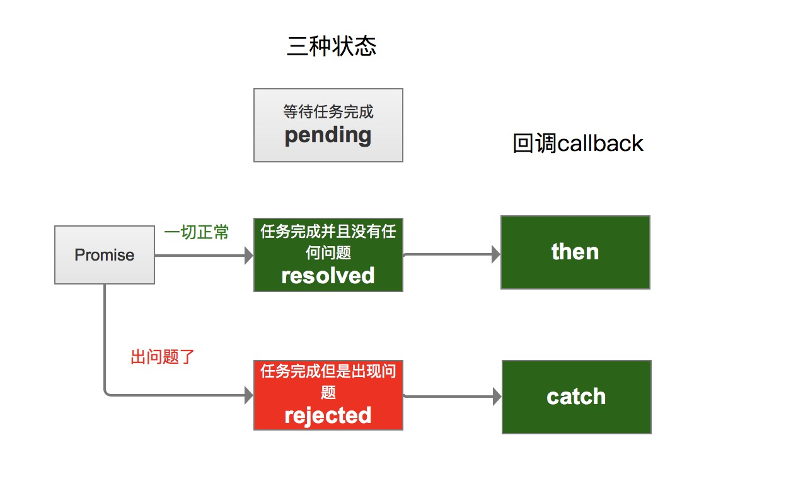

<!DOCTYPE html>
<html>
<head><meta name="generator" content="Hexo 3.8.0">
  <meta charset="utf-8">
  
  <title>js异步编程的那些事(一) | guowj</title>
  <meta name="viewport" content="width=device-width, initial-scale=1, maximum-scale=1">
  
  <meta name="keywords" content="ES6ES7异步MLHttpRequestpromisefetch">
  
  
  
  
  <meta name="description" content="&amp;nbsp;&amp;nbsp;&amp;nbsp;&amp;nbsp;&amp;nbsp;&amp;nbsp;从最早的回调函数，之后迎来了 promise,再次就是上篇文章说的 generator，js 解决异步的方案一次次的再优化，ES7 中出现的 Async/await 是目前 js 中异步最终极的解决方案，我的妈耶不谈兼容问题的话，实在是太好用啦。虽然兼容性真的很一般，但是我们可以用 polyfill(js 修补器)去兼容一下">
<meta name="keywords" content="ES6,ES7,异步,MLHttpRequest,promise,fetch">
<meta property="og:type" content="article">
<meta property="og:title" content="JS异步编程的那些事(一)">
<meta property="og:url" content="https://gwjacqueline.github.io/JS异步编程的那些事(一)/index.html">
<meta property="og:site_name" content="guowj">
<meta property="og:description" content="&amp;nbsp;&amp;nbsp;&amp;nbsp;&amp;nbsp;&amp;nbsp;&amp;nbsp;从最早的回调函数，之后迎来了 promise,再次就是上篇文章说的 generator，js 解决异步的方案一次次的再优化，ES7 中出现的 Async/await 是目前 js 中异步最终极的解决方案，我的妈耶不谈兼容问题的话，实在是太好用啦。虽然兼容性真的很一般，但是我们可以用 polyfill(js 修补器)去兼容一下">
<meta property="og:locale" content="zh-CN">
<meta property="og:image" content="https://gwjacqueline.github.io/images/promise.jpg">
<meta property="og:updated_time" content="2019-04-20T09:15:21.000Z">
<meta name="twitter:card" content="summary">
<meta name="twitter:title" content="JS异步编程的那些事(一)">
<meta name="twitter:description" content="&amp;nbsp;&amp;nbsp;&amp;nbsp;&amp;nbsp;&amp;nbsp;&amp;nbsp;从最早的回调函数，之后迎来了 promise,再次就是上篇文章说的 generator，js 解决异步的方案一次次的再优化，ES7 中出现的 Async/await 是目前 js 中异步最终极的解决方案，我的妈耶不谈兼容问题的话，实在是太好用啦。虽然兼容性真的很一般，但是我们可以用 polyfill(js 修补器)去兼容一下">
<meta name="twitter:image" content="https://gwjacqueline.github.io/images/promise.jpg">
  
    <link rel="alternate" href="/atom.xml" title="guowj" type="application/atom+xml">
  

  

  <link rel="icon" href="/css/images/mylogo.png">
  <link rel="apple-touch-icon" href="/css/images/mylogo.png">
  
    <link href="//fonts.googleapis.com/css?family=Source+Code+Pro" rel="stylesheet" type="text/css">
  
  <link href="https://fonts.googleapis.com/css?family=Open+Sans|Montserrat:700" rel="stylesheet" type="text/css">
  <link href="https://fonts.googleapis.com/css?family=Roboto:400,300,300italic,400italic" rel="stylesheet" type="text/css">
  <link href="//netdna.bootstrapcdn.com/font-awesome/4.0.3/css/font-awesome.css" rel="stylesheet">
  <style type="text/css">
    @font-face{font-family:futura-pt; src:url("../css/fonts/FuturaPTBold.otf") format("woff");font-weight:500;font-style:normal;}
    @font-face{font-family:futura-pt-light; src:url("../css/fonts/FuturaPTBook.otf") format("woff");font-weight:lighter;font-style:normal;}
    @font-face{font-family:futura-pt-italic; src:url("../css/fonts/FuturaPTBookOblique.otf") format("woff");font-weight:400;font-style:italic;}
}

  </style>
  <link rel="stylesheet" href="/css/style.css">

  <script src="/js/jquery-3.1.1.min.js"></script>
  <script src="/js/bootstrap.js"></script>

  <!-- Bootstrap core CSS -->
  <link rel="stylesheet" href="/css/bootstrap.css">

  
    <link rel="stylesheet" href="/css/dialog.css">
  

  

  
    <link rel="stylesheet" href="/css/header-post.css">
  

  
  
  
    <link rel="stylesheet" href="/css/vdonate.css">
  

</head>
</html>


  <body data-spy="scroll" data-target="#toc" data-offset="50">


  
  <div id="container">
    <div id="wrap">
      
        <header>

    <div id="allheader" class="navbar navbar-default navbar-static-top" role="navigation">
        <div class="navbar-inner">
          
          <div class="container"> 
            <button type="button" class="navbar-toggle" data-toggle="collapse" data-target=".navbar-collapse">
              <span class="sr-only">Toggle navigation</span>
              <span class="icon-bar"></span>
              <span class="icon-bar"></span>
              <span class="icon-bar"></span>
            </button>

            
              <a class="brand" style="
                 margin-top: 0px;" href="#" data-toggle="modal" data-target="#myModal">
                  
              </a>
            
            
            <div class="navbar-collapse collapse">
              <ul class="hnav navbar-nav">
                
                  <li> <a class="main-nav-link" href="/">首页</a> </li>
                
                  <li> <a class="main-nav-link" href="/archives">归档</a> </li>
                
                  <li> <a class="main-nav-link" href="/categories">分类</a> </li>
                
                  <li> <a class="main-nav-link" href="/tags">标签</a> </li>
                
                  <li> <a class="main-nav-link" href="/about">关于</a> </li>
                
                  <li><div id="search-form-wrap">

    <form class="search-form">
        <input type="text" class="ins-search-input search-form-input" placeholder>
        <button type="submit" class="search-form-submit"></button>
    </form>
    <div class="ins-search">
    <div class="ins-search-mask"></div>
    <div class="ins-search-container">
        <div class="ins-input-wrapper">
            <input type="text" class="ins-search-input" placeholder="请输入关键词...">
            <span class="ins-close ins-selectable"><i class="fa fa-times-circle"></i></span>
        </div>
        <div class="ins-section-wrapper">
            <div class="ins-section-container"></div>
        </div>
    </div>
</div>
<script>
(function (window) {
    var INSIGHT_CONFIG = {
        TRANSLATION: {
            POSTS: '文章',
            PAGES: '页面',
            CATEGORIES: '分类',
            TAGS: '标签',
            UNTITLED: '(无标题)',
        },
        ROOT_URL: '/',
        CONTENT_URL: '/content.json',
    };
    window.INSIGHT_CONFIG = INSIGHT_CONFIG;
})(window);
</script>
<script src="/js/insight.js"></script>

</div></li>
            </ul></div>
          </div>
                
      </div>
    </div>

</header>


      
            
      <div id="content" class="outer">
        
          <section id="main" style="float:none;"><article id="post-JS异步编程的那些事(一)" style="width: 75%; float:left;" class="article article-type-post" itemscope itemprop="blogPost">
  <div id="articleInner" class="article-inner">
    
    
      <header class="article-header">
        
  
    <h1 class="thumb" itemprop="name">
      JS异步编程的那些事(一)
    </h1>
  

      </header>
    
    <div class="article-meta">
      
	<a href="/JS异步编程的那些事(一)/" class="article-date">
	  <time datetime="2019-04-18T13:31:33.000Z" itemprop="datePublished">2019-04-18</time>
	</a>

      
    <a class="article-category-link" href="/categories/js/">js</a>

      
	<a class="article-views">
	<span id="busuanzi_container_page_pv">
		阅读量<span id="busuanzi_value_page_pv"></span>
	</span>
	</a>

      

    </div>
    <div class="article-entry" itemprop="articleBody">
      
        <blockquote>
<p>&nbsp;&nbsp;&nbsp;&nbsp;&nbsp;&nbsp;从最早的回调函数，之后迎来了 promise,再次就是上篇文章说的 <a href="https://gwjacqueline.github.io/generator%E7%94%9F%E6%88%90%E5%99%A8/">generator</a>，js 解决异步的方案一次次的再优化，ES7 中出现的 Async/await 是目前 js 中异步最终极的解决方案，我的妈耶不谈兼容问题的话，实在是太好用啦。虽然兼容性真的很一般，但是我们可以用 polyfill(js 修补器)去兼容一下呀。接下来我将简单介绍下 Promise、fetch、 Async/await 以及分别用 fetch 和 Async/await 去封装一个增删改查的方法。来看看编写异步代码的过程是如何一步步变得优雅起来的。</p>
</blockquote>
<a id="more"></a>
<h2 id="Promise"><a href="#Promise" class="headerlink" title="Promise"></a>Promise</h2><p>&nbsp;&nbsp;&nbsp;&nbsp;&nbsp;&nbsp;首先我们先来说说 Promise 吧~在 ES6 之前处理异步问题时，我们为了避免操作时的页面中断，通过都是使用回调函数，这时候如果回调函数当中又有回调函数，那么我们就会陷入无尽的回调地狱，代码也变得很难维护。而有了 Promise 对象后，我们就可以很好的解决这个问题，用它的链式调用就可以用同步函数的方式去写异步代码了。简直是造福程序员界一项很牛逼的东西。接下来我们创建一个 Promise 实例。</p>
<figure class="highlight plain"><table><tr><td class="gutter"><pre><span class="line">1</span><br><span class="line">2</span><br></pre></td><td class="code"><pre><span class="line">let promise = new Promise();</span><br><span class="line">console.log(promise);  //Uncaught TypeError: Promise resolver undefined is not a functionat new Promise</span><br></pre></td></tr></table></figure>
<p>&nbsp;&nbsp;&nbsp;&nbsp;&nbsp;&nbsp;注意：<strong>Promise 构造函数一定要传回调才可以，否则会报错</strong>。它接受一个函数作为参数，该函数的两个参数分别是 resolve 和 reject。</p>
<figure class="highlight plain"><table><tr><td class="gutter"><pre><span class="line">1</span><br><span class="line">2</span><br><span class="line">3</span><br></pre></td><td class="code"><pre><span class="line">let promise = new Promise((resolve, reject) =&gt; &#123;</span><br><span class="line">&#125;);</span><br><span class="line">console.log(promise);  //Promise &#123;&lt;pending&gt;&#125;</span><br></pre></td></tr></table></figure>
<p>&nbsp;&nbsp;&nbsp;&nbsp;&nbsp;&nbsp;我们看到打印出来的是<em>Promise{ &lt; pending &gt; }</em>,表示任务在进行中。接下来我将用一张图来看看 Promise 的三种状态和对应的回调。</p>
<h3 id="Promise-的三种状态和对应的回调"><a href="#Promise-的三种状态和对应的回调" class="headerlink" title="Promise 的三种状态和对应的回调"></a>Promise 的三种状态和对应的回调</h3><p><div align="center"><br>  <br></div><br>&nbsp;&nbsp;&nbsp;&nbsp;&nbsp;&nbsp;虽然这张图我画的有点丑，但是应该也很简单明了的看懂Promise的三种状态，其中我们基本上运用的是resolved和resolved两种状态。<br><figure class="highlight plain"><table><tr><td class="gutter"><pre><span class="line">1</span><br><span class="line">2</span><br><span class="line">3</span><br><span class="line">4</span><br><span class="line">5</span><br><span class="line">6</span><br><span class="line">7</span><br><span class="line">8</span><br><span class="line">9</span><br><span class="line">10</span><br><span class="line">11</span><br><span class="line">12</span><br><span class="line">13</span><br><span class="line">14</span><br><span class="line">15</span><br></pre></td><td class="code"><pre><span class="line">let promise = new Promise((resolve, reject) =&gt; &#123;</span><br><span class="line">    if (/* 异步操作成功*/) &#123;</span><br><span class="line">      resolve();</span><br><span class="line">    &#125; else &#123;</span><br><span class="line">        /* 操作失败 */</span><br><span class="line">        //reject();</span><br><span class="line">    &#125;  </span><br><span class="line">&#125;);</span><br><span class="line">promise.then(() =&gt; &#123;</span><br><span class="line">    console.log(&quot;成功，没有任何问题&quot;);  //成功，没有任何问题</span><br><span class="line">&#125;).then(() =&gt; &#123;</span><br><span class="line">    console.log(&quot;成功，想调几次就调几次&quot;);</span><br><span class="line">&#125;).catch(() =&gt; &#123;</span><br><span class="line">    console.log(&quot;执行失败方法&quot;);</span><br><span class="line">&#125;);</span><br></pre></td></tr></table></figure></p>
<p>&nbsp;&nbsp;&nbsp;&nbsp;&nbsp;&nbsp;我们可以看到，只要前面的reject()成功，后续想调用几个then()方法都可以，这样就不仅仅有一个回调了，有n个回调在等着你。如果异步操作失败了，Promise的转态就会变为rejected，去调用catch方法指定的回调函数处理这个错误。另外，then方法指定的回调函数，如果在运行过程中抛出了错误，也会被catch方法捕获。这里要注意的是：<strong>catch返回码超过300就不会打印</strong></p>
<h3 id="Promise-对象特点"><a href="#Promise-对象特点" class="headerlink" title="Promise 对象特点"></a>Promise 对象特点</h3><p>1.对象的状态是不受外界影响的</p>
<blockquote>
<p>只有异步操作的结果，才可以决定当前是哪一种状态，任何其他的操作都无法改变这个状态。这也是 Promise 这个名字的由来，它的英语意思就是“承诺”，表示其他手段无法改变。</p>
</blockquote>
<figure class="highlight plain"><table><tr><td class="gutter"><pre><span class="line">1</span><br><span class="line">2</span><br><span class="line">3</span><br><span class="line">4</span><br><span class="line">5</span><br><span class="line">6</span><br><span class="line">7</span><br><span class="line">8</span><br><span class="line">9</span><br><span class="line">10</span><br><span class="line">11</span><br><span class="line">12</span><br><span class="line">13</span><br></pre></td><td class="code"><pre><span class="line">let fulfill = new Promise((resolve,reject) =&gt; &#123;</span><br><span class="line">    resolve(&apos;success&apos;);</span><br><span class="line">    console.log(&apos;resolve before&apos;);</span><br><span class="line">    reject(&apos;error&apos;);</span><br><span class="line">&#125;);</span><br><span class="line"></span><br><span class="line">fulfill.then(data =&gt; &#123;</span><br><span class="line">    console.log(data);</span><br><span class="line">&#125;);</span><br><span class="line"></span><br><span class="line">fulfill.catch(msg =&gt; &#123;</span><br><span class="line">    console.log(msg);</span><br><span class="line">&#125;)</span><br></pre></td></tr></table></figure>
<p>2.一旦转态改变，转态就会凝固，不再改变</p>
<blockquote>
<p>最后的打印结果为：<br>resolve before<br>success<br>resolve 下一句语句是可以执行的，为什么 reject 没有去调用 catch 指定的回调函数呢？这就是因为 Promise 对象的特点：状态的凝固。这个对象从起始的 Pending 状态在根据 resolve 或 reject 返回 Resolved 或 Rejected 状态。</p>
</blockquote>
<h2 id="fetch"><a href="#fetch" class="headerlink" title="fetch"></a>fetch</h2><p>&nbsp;&nbsp;&nbsp;&nbsp;&nbsp;&nbsp;fetch 是一个基于 promise 的请求方法，更简单便捷。相比与原先在不同浏览器中使用 XMLHttpRequest 对象或者是 ActiveXObject(“x.XMLHTTP”)，fetch 方法简化了这一操作。接下来我们用代码看看 fetch 是如何让代码优雅起来的。</p>
<h3 id="fetch-如何优雅于-XMLHttpRequest"><a href="#fetch-如何优雅于-XMLHttpRequest" class="headerlink" title="fetch 如何优雅于 XMLHttpRequest"></a>fetch 如何优雅于 XMLHttpRequest</h3><figure class="highlight plain"><table><tr><td class="gutter"><pre><span class="line">1</span><br><span class="line">2</span><br><span class="line">3</span><br><span class="line">4</span><br><span class="line">5</span><br><span class="line">6</span><br><span class="line">7</span><br><span class="line">8</span><br><span class="line">9</span><br><span class="line">10</span><br><span class="line">11</span><br><span class="line">12</span><br><span class="line">13</span><br><span class="line">14</span><br><span class="line">15</span><br></pre></td><td class="code"><pre><span class="line">//XMLHttpRequest</span><br><span class="line">var xml = new XMLHttpRequest;</span><br><span class="line">//调用请求</span><br><span class="line">xml.open(&apos;GET&apos;, &apos;http://jsonplaceholder.typicode.com/postst&apos;);</span><br><span class="line">//发送到服务器上</span><br><span class="line">xml.send();</span><br><span class="line">//监听响应情况</span><br><span class="line">xml.onreadystatechange = function () &#123;</span><br><span class="line">    //响应成功事件</span><br><span class="line">    if (this.readyState === 4 &amp;&amp; xml.status === 200) &#123;</span><br><span class="line">        console.log(xml.responseXML);</span><br><span class="line">    &#125; else &#123;</span><br><span class="line">        console.log(&quot;发生错误：&quot;, xmlJson.status);</span><br><span class="line">    &#125;</span><br><span class="line">&#125;;</span><br></pre></td></tr></table></figure>
<figure class="highlight plain"><table><tr><td class="gutter"><pre><span class="line">1</span><br><span class="line">2</span><br><span class="line">3</span><br><span class="line">4</span><br><span class="line">5</span><br><span class="line">6</span><br></pre></td><td class="code"><pre><span class="line">//fetch</span><br><span class="line">let url = &quot;http://jsonplaceholder.typicode.com/posts&quot;;</span><br><span class="line">fetch(url)</span><br><span class="line">    .then((res) =&gt; &#123;</span><br><span class="line">        console.log(res);   //Response &#123;type: &quot;cors&quot;, url: &quot;http://jsonplaceholder.typicode.com/  posts&quot;, redirected: false, status: 200, ok: true, …&#125;</span><br><span class="line">    &#125;).catch();;</span><br></pre></td></tr></table></figure>
<p>&nbsp;&nbsp;&nbsp;&nbsp;&nbsp;&nbsp;从代码上很直观的能看出代码量的减少。fetch 方法返回的是一个 Promise 对象,所以我们可以链式的发起异步请求。<a href="http://jsonplaceholder.typicode.com" target="_blank" rel="noopener">http://jsonplaceholder.typicode.com</a> 这个是我做测试经常会用到的网址。从上面的例子可以看出使用 fetch 时第一步 then 返回的是 response 对象。我们需要使用<strong>json()</strong>方法将将请求回来的 response 对象解析成我们正常可读的对象。这里要注意的是：<strong>目前原生的 fetch 还不支持 jsonp 的请求方式，如果需要实现 jsonp，需要安装 npm 包 fetchJ-jsonp</strong></p>
<figure class="highlight plain"><table><tr><td class="gutter"><pre><span class="line">1</span><br><span class="line">2</span><br><span class="line">3</span><br><span class="line">4</span><br><span class="line">5</span><br><span class="line">6</span><br><span class="line">7</span><br><span class="line">8</span><br><span class="line">9</span><br></pre></td><td class="code"><pre><span class="line"></span><br><span class="line">let url = &quot;http://jsonplaceholder.typicode.com/posts&quot;;</span><br><span class="line">fetch(url)</span><br><span class="line">.then((res) =&gt;</span><br><span class="line">//将请求回来的 response 对象解析成我们正常可读的对象</span><br><span class="line">res.json()</span><br><span class="line">).then((data) =&gt; &#123;</span><br><span class="line">console.log(data);</span><br><span class="line">&#125;).catch();;</span><br></pre></td></tr></table></figure>
<p>&nbsp;&nbsp;&nbsp;&nbsp;&nbsp;&nbsp;我们在 response 对象上调用 json()方法，返回的依然是一个 Promise 对象，我们需要在下一步的 then()中获得服务器返回的原始对象。接下来我们去请求一个根本没有的域名，模拟一下 catch。</p>
<figure class="highlight plain"><table><tr><td class="gutter"><pre><span class="line">1</span><br><span class="line">2</span><br><span class="line">3</span><br><span class="line">4</span><br><span class="line">5</span><br></pre></td><td class="code"><pre><span class="line"></span><br><span class="line">let errurl = &quot;http://jsonplaceholder.typicode12345.com/posts&quot;;</span><br><span class="line">fetch(errurl)</span><br><span class="line">.then(() =&gt; console.log(&quot;成功&quot;))</span><br><span class="line">.catch((error) =&gt; console.log(`错误信息：$&#123;error&#125;`));//错误信息：TypeError: Failed to fetch</span><br></pre></td></tr></table></figure>
<h3 id="fetch-请求三种数据格式"><a href="#fetch-请求三种数据格式" class="headerlink" title="fetch 请求三种数据格式"></a>fetch 请求三种数据格式</h3><p>&nbsp;&nbsp;&nbsp;&nbsp;&nbsp;&nbsp;接下来，我们来实践下如何用 fetch 请求 本地文本数据,本地 json 数据 还有网络接口吧。具体的代码实现效果可以看看<a href="https://gwjacqueline.github.io/fetch-demo/fetchDemo.html">实现效果</a>。其中请求本地文本数据采用了 XMLHttpRequest 和 fetch 两种方式。这里展示一部分重要代码。样式没有特意去优化，用的是<a href="https://www.bootcdn.cn/skeleton/" target="_blank" rel="noopener">一个超简单的响应式模板 skeleton</a>。</p>
<p>请求本地文本数据</p>
<figure class="highlight plain"><table><tr><td class="gutter"><pre><span class="line">1</span><br><span class="line">2</span><br><span class="line">3</span><br><span class="line">4</span><br><span class="line">5</span><br><span class="line">6</span><br><span class="line">7</span><br><span class="line">8</span><br><span class="line">9</span><br><span class="line">10</span><br></pre></td><td class="code"><pre><span class="line">function getText() &#123;</span><br><span class="line">    fetch(&quot;data/test.txt&quot;)</span><br><span class="line">        //将 response 对象解析</span><br><span class="line">        .then((res) =&gt; res.text())</span><br><span class="line">        .then((data) =&gt; &#123;</span><br><span class="line">            console.log(data); //变瘦瘦变美美</span><br><span class="line">            document.getElementById(&quot;output&quot;).innerHTML = data;</span><br><span class="line">        &#125;)</span><br><span class="line">        .catch(() =&gt; &#123; console.log(&quot;获取失败&quot;) &#125;);</span><br><span class="line">&#125;</span><br></pre></td></tr></table></figure>
<p>请求本地 json 数据</p>
<figure class="highlight plain"><table><tr><td class="gutter"><pre><span class="line">1</span><br><span class="line">2</span><br><span class="line">3</span><br><span class="line">4</span><br><span class="line">5</span><br><span class="line">6</span><br><span class="line">7</span><br><span class="line">8</span><br><span class="line">9</span><br><span class="line">10</span><br><span class="line">11</span><br><span class="line">12</span><br><span class="line">13</span><br><span class="line">14</span><br><span class="line">15</span><br><span class="line">16</span><br><span class="line">17</span><br><span class="line">18</span><br></pre></td><td class="code"><pre><span class="line">function getJson() &#123;</span><br><span class="line">    fetch(&quot;data/test.json&quot;)</span><br><span class="line">        .then(res =&gt; res.json())</span><br><span class="line">        .then((data) =&gt; &#123;</span><br><span class="line">            console.log(data);//(6) [&#123;…&#125;, &#123;…&#125;, &#123;…&#125;, &#123;…&#125;, &#123;…&#125;, &#123;…&#125;]</span><br><span class="line">            let outPut = &apos;&apos;;</span><br><span class="line">            //使用forEach方法遍历数据</span><br><span class="line">            data.forEach((x) =&gt; &#123;</span><br><span class="line">                outPut += `</span><br><span class="line">                id:$&#123;x.id&#125;&lt;br&gt;</span><br><span class="line">                title:$&#123;x.title&#125;&lt;br&gt;</span><br><span class="line">                body:$&#123;x.body&#125;&lt;br&gt;</span><br><span class="line">                `</span><br><span class="line">            &#125;);</span><br><span class="line">            document.getElementById(&quot;output&quot;).innerHTML = outPut;</span><br><span class="line">        &#125;)</span><br><span class="line">        .catch(() =&gt; &#123; console.log(&quot;获取失败&quot;) &#125;);</span><br><span class="line">    &#125;</span><br></pre></td></tr></table></figure>
<p>请求网络接口</p>
<figure class="highlight plain"><table><tr><td class="gutter"><pre><span class="line">1</span><br><span class="line">2</span><br><span class="line">3</span><br><span class="line">4</span><br><span class="line">5</span><br><span class="line">6</span><br><span class="line">7</span><br><span class="line">8</span><br><span class="line">9</span><br><span class="line">10</span><br><span class="line">11</span><br><span class="line">12</span><br><span class="line">13</span><br><span class="line">14</span><br><span class="line">15</span><br><span class="line">16</span><br></pre></td><td class="code"><pre><span class="line">function getWeb() &#123;</span><br><span class="line">    let weburl = &quot;https://api.github.com/users&quot;;</span><br><span class="line">    fetch(weburl)</span><br><span class="line">        .then((res) =&gt; res.json())</span><br><span class="line">        .then((data) =&gt; &#123;</span><br><span class="line">            console.log(data);</span><br><span class="line">            let webData = &apos;&apos;;</span><br><span class="line">            data.forEach((x) =&gt; &#123;</span><br><span class="line">                webData += `loginName:$&#123;x.login&#125;&lt;br&gt;`</span><br><span class="line">            &#125;);</span><br><span class="line">            document.getElementById(&quot;output&quot;).innerHTML = webData;</span><br><span class="line">        &#125;)</span><br><span class="line">        .catch(() =&gt; &#123;</span><br><span class="line">            console.log(&quot;获取失败&quot;);</span><br><span class="line">        &#125;);</span><br><span class="line">&#125;</span><br></pre></td></tr></table></figure>
<p>&nbsp;&nbsp;&nbsp;&nbsp;&nbsp;&nbsp;本篇主要介绍记录了 Promise 对象，fetch 如何优雅于 XMLHttpRequest，以及如何用 fetch 请求三种数据数据格式。下一篇中，我们将用 fetch 去封装一个增删改查的方法，以及记录下 JS 最终极的异步解决方案 Async/awai。</p>

      
    </div>
    <footer class="article-footer">
      
        <div id="donation_div"></div>

<script src="/js/vdonate.js"></script>
<script>
var a = new Donate({
  title: '如果觉得我的文章对您有用，请随意打赏。您的支持将鼓励我继续创作!', // 可选参数，打赏标题
  btnText: '打赏支持', // 可选参数，打赏按钮文字
  el: document.getElementById('donation_div'),
  wechatImage: '../images/wx.jpeg',
  alipayImage: '../images/zfb.jpg'
});
</script>
      
      
      <div>
        <ul class="post-copyright">
          <li class="post-copyright-author">
          <strong>本文作者:  </strong>guowj
          </li>
          <li class="post-copyright-link">
          <strong>本文链接:  </strong>
          <a href="/JS异步编程的那些事(一)/" target="_blank" title="JS异步编程的那些事(一)">https://gwjacqueline.github.io/JS异步编程的那些事(一)/</a>
          </li>
          <li class="post-copyright-license">
            <strong>版权声明:   </strong>
            本博客所有文章除特别声明外，均采用 <a rel="license" href="https://creativecommons.org/licenses/by-nc-nd/4.0/" target="_blank" title="Attribution-NonCommercial-NoDerivatives 4.0 International (CC BY-NC-ND 4.0)">CC BY-NC-ND 4.0</a>
            许可协议。转载请注明出处
          </li>
         
        </ul>
<div>
</div></div>
      
      
        
	<div id="comment">
		<!-- 来必力City版安装代码 -->
		<div id="lv-container" data-id="city" data-uid="MTAyMC80MzU1OS8yMDA5OA==" ">
		<script type="text/javascript">
		   (function(d, s) {
		       var j, e = d.getElementsByTagName(s)[0];

		       if (typeof LivereTower === 'function') { return; }

		       j = d.createElement(s);
		       j.src = 'https://cdn-city.livere.com/js/embed.dist.js';
		       j.async = true;

		       e.parentNode.insertBefore(j, e);
		   })(document, 'script');
		</script>
		<noscript>为正常使用来必力评论功能请激活JavaScript</noscript>
		</div>
		<!-- City版安装代码已完成 -->
	</div>


      
      
        
  <ul class="article-tag-list"><li class="article-tag-list-item"><a class="article-tag-list-link" href="/tags/ES6/">ES6</a></li><li class="article-tag-list-item"><a class="article-tag-list-link" href="/tags/ES7/">ES7</a></li><li class="article-tag-list-item"><a class="article-tag-list-link" href="/tags/MLHttpRequest/">MLHttpRequest</a></li><li class="article-tag-list-item"><a class="article-tag-list-link" href="/tags/fetch/">fetch</a></li><li class="article-tag-list-item"><a class="article-tag-list-link" href="/tags/promise/">promise</a></li><li class="article-tag-list-item"><a class="article-tag-list-link" href="/tags/异步/">异步</a></li></ul>

      

    </footer>
  </div>
  
    
<nav id="article-nav">
  
    <a href="/JS异步编程的那些事(二)/" id="article-nav-newer" class="article-nav-link-wrap">
      <strong class="article-nav-caption">上一篇</strong>
      <div class="article-nav-title">
        
          JS异步编程的那些事(二)
        
      </div>
    </a>
  
  
    <a href="/generator生成器/" id="article-nav-older" class="article-nav-link-wrap">
      <strong class="article-nav-caption">下一篇</strong>
      <div class="article-nav-title">generator生成器</div>
    </a>
  
</nav>

  
</article>

<!-- Table of Contents -->

  <aside id="toc-sidebar">
    <div id="toc" class="toc-article">
    <strong class="toc-title">文章目录</strong>
    
        <ol class="nav"><li class="nav-item nav-level-2"><a class="nav-link" href="#Promise"><span class="nav-number">1.</span> <span class="nav-text">Promise</span></a><ol class="nav-child"><li class="nav-item nav-level-3"><a class="nav-link" href="#Promise-的三种状态和对应的回调"><span class="nav-number">1.1.</span> <span class="nav-text">Promise 的三种状态和对应的回调</span></a></li><li class="nav-item nav-level-3"><a class="nav-link" href="#Promise-对象特点"><span class="nav-number">1.2.</span> <span class="nav-text">Promise 对象特点</span></a></li></ol></li><li class="nav-item nav-level-2"><a class="nav-link" href="#fetch"><span class="nav-number">2.</span> <span class="nav-text">fetch</span></a><ol class="nav-child"><li class="nav-item nav-level-3"><a class="nav-link" href="#fetch-如何优雅于-XMLHttpRequest"><span class="nav-number">2.1.</span> <span class="nav-text">fetch 如何优雅于 XMLHttpRequest</span></a></li><li class="nav-item nav-level-3"><a class="nav-link" href="#fetch-请求三种数据格式"><span class="nav-number">2.2.</span> <span class="nav-text">fetch 请求三种数据格式</span></a></li></ol></li></ol>
    
    </div>
  </aside>

</section>
        
      </div>
      
      <footer id="footer">
  

  <div class="container">
      	<div class="row">
	      <!--<p> Powered by <a href="http://hexo.io/" target="_blank">Hexo</a> and <a href="https://github.com/iTimeTraveler/hexo-theme-hiker" target="_blank">Hexo-theme-hiker</a> </p>-->
	      <p id="copyRightEn">Copyright &copy;2019 guowj All Rights Reserved.</p>
	      
	      
    		<p class="busuanzi_uv">
				访客数 : <span id="busuanzi_value_site_uv"></span> |  
				访问量 : <span id="busuanzi_value_site_pv"></span>
		    </p>
  		   
		</div>

		
  </div>
</footer>


<!-- min height -->

<script>
    var wrapdiv = document.getElementById("wrap");
    var contentdiv = document.getElementById("content");
    var allheader = document.getElementById("allheader");

    wrapdiv.style.minHeight = document.body.offsetHeight + "px";
    if (allheader != null) {
      contentdiv.style.minHeight = document.body.offsetHeight - allheader.offsetHeight - document.getElementById("footer").offsetHeight + "px";
    } else {
      contentdiv.style.minHeight = document.body.offsetHeight - document.getElementById("footer").offsetHeight + "px";
    }
</script>
    </div>
    <!-- <nav id="mobile-nav">
  
    <a href="/" class="mobile-nav-link">Home</a>
  
    <a href="/archives" class="mobile-nav-link">Archives</a>
  
    <a href="/categories" class="mobile-nav-link">Categories</a>
  
    <a href="/tags" class="mobile-nav-link">Tags</a>
  
    <a href="/about" class="mobile-nav-link">About</a>
  
</nav> -->
    

<!-- mathjax config similar to math.stackexchange -->

<script type="text/x-mathjax-config">
  MathJax.Hub.Config({
    tex2jax: {
      inlineMath: [ ['$','$'], ["\\(","\\)"] ],
      processEscapes: true
    }
  });
</script>

<script type="text/x-mathjax-config">
    MathJax.Hub.Config({
      tex2jax: {
        skipTags: ['script', 'noscript', 'style', 'textarea', 'pre', 'code']
      }
    });
</script>

<script type="text/x-mathjax-config">
    MathJax.Hub.Queue(function() {
        var all = MathJax.Hub.getAllJax(), i;
        for(i=0; i < all.length; i += 1) {
            all[i].SourceElement().parentNode.className += ' has-jax';
        }
    });
</script>

<script type="text/javascript" src="https://cdnjs.cloudflare.com/ajax/libs/mathjax/2.7.1/MathJax.js?config=TeX-AMS-MML_HTMLorMML">
</script>


  <link rel="stylesheet" href="/fancybox/jquery.fancybox.css">
  <script src="/fancybox/jquery.fancybox.pack.js"></script>


<script src="/js/scripts.js"></script>


  <script src="/js/dialog.js"></script>


	<div style="display: none;">
    <script src="https://s95.cnzz.com/z_stat.php?id=1260716016&web_id=1260716016" language="JavaScript"></script>
  </div>


	<script async src="//busuanzi.ibruce.info/busuanzi/2.3/busuanzi.pure.mini.js">
	</script>


  </div>

  <div class="modal fade" id="myModal" tabindex="-1" role="dialog" aria-labelledby="myModalLabel" aria-hidden="true" style="display: none;">
  <div class="modal-dialog">
    <div class="modal-content">
      <div class="modal-header">
        <h2 class="modal-title" id="myModalLabel">设置</h2>
      </div>
      <hr style="margin-top:0px; margin-bottom:0px; width:80%; border-top: 3px solid #000;">
      <hr style="margin-top:2px; margin-bottom:0px; width:80%; border-top: 1px solid #000;">


      <div class="modal-body">
          <div style="margin:6px;">
            <a data-toggle="collapse" data-parent="#accordion" href="#collapseOne" onclick="javascript:setFontSize();" aria-expanded="true" aria-controls="collapseOne">
              正文字号大小
            </a>
          </div>
          <div id="collapseOne" class="panel-collapse collapse" role="tabpanel" aria-labelledby="headingOne">
          <div class="panel-body">
            您已调整页面字体大小
          </div>
        </div>
      


          <div style="margin:6px;">
            <a data-toggle="collapse" data-parent="#accordion" href="#collapseTwo" onclick="javascript:setBackground();" aria-expanded="true" aria-controls="collapseTwo">
              夜间护眼模式
            </a>
        </div>
          <div id="collapseTwo" class="panel-collapse collapse" role="tabpanel" aria-labelledby="headingTwo">
          <div class="panel-body">
            夜间模式已经开启，再次单击按钮即可关闭 
          </div>
        </div>

        <div>
            <a data-toggle="collapse" data-parent="#accordion" href="#collapseThree" aria-expanded="true" aria-controls="collapseThree">&nbsp;&nbsp;&nbsp;&nbsp;&nbsp;&nbsp;关 于&nbsp;&nbsp;&nbsp;&nbsp;&nbsp;&nbsp;</a>
        </div>
         <div id="collapseThree" class="panel-collapse collapse" role="tabpanel" aria-labelledby="headingThree">
          <div class="panel-body">
            guowj
          </div>
          <div class="panel-body">
            Copyright © 2019 guowj All Rights Reserved.
          </div>
        </div>
      </div>


      <hr style="margin-top:0px; margin-bottom:0px; width:80%; border-top: 1px solid #000;">
      <hr style="margin-top:2px; margin-bottom:0px; width:80%; border-top: 3px solid #000;">
      <div class="modal-footer">
        <button type="button" class="close" data-dismiss="modal" aria-label="Close"><span aria-hidden="true">×</span></button>
      </div>
    </div>
  </div>
</div>
  
  <a id="rocket" href="#top" class=""></a>
  <script type="text/javascript" src="/js/totop.js?v=1.0.0" async=""></script>
  
    <a id="menu-switch"><i class="fa fa-bars fa-lg"></i></a>
  
</body>
</html>